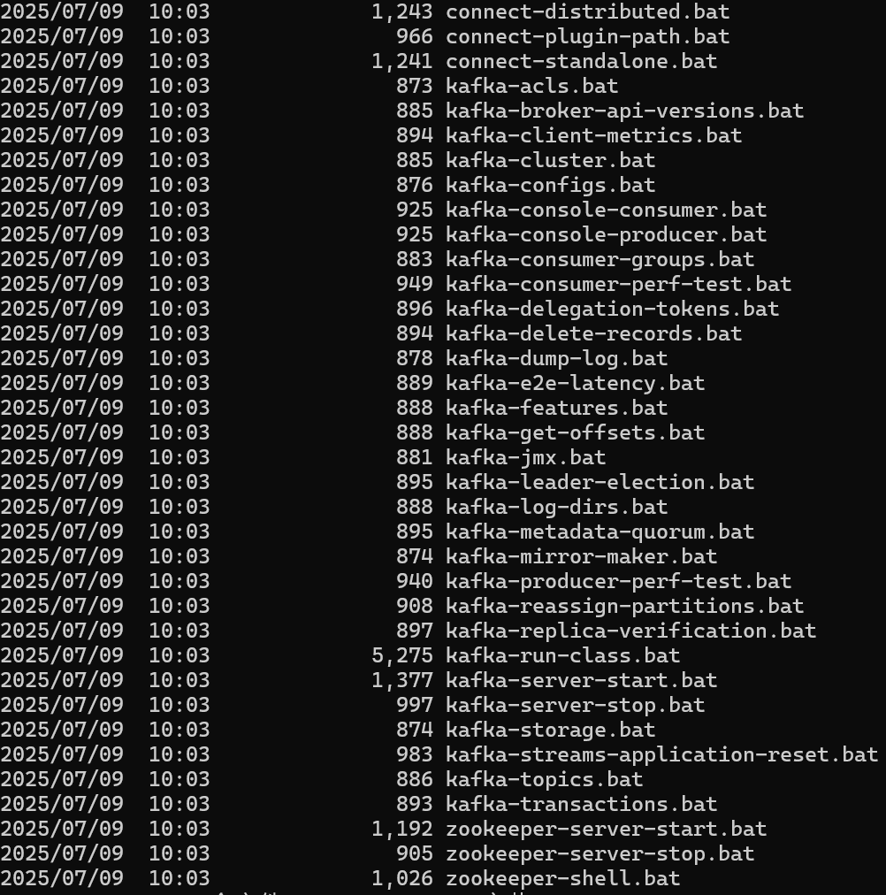

这篇文章上次修改于 394 天前，可能其部分内容已经发生变化，如有疑问可询问作者。
Kafka是最初由Linkedin公司开发，是一个分布式、支持分区的（partition）、多副本的（replica），基于zookeeper协调的分布式消息系统，它的最大的特性就是可以实时的处理大量数据以满足各种需求场景：比如基于hadoop的批处理系统、低延迟的实时系统、storm/Spark流式处理引擎，web/nginx日志、访问日志，消息服务等等，用scala语言编写，Linkedin于2010年贡献给了Apache基金会并成为顶级开源 项目。
一、Kafaka
（1）产生背景
当今社会各种应用系统诸如商业、社交、搜索、浏览等像信息工厂一样不断的生产出各种信息，在大数据时代，我们面临如下几个挑战：
1.如何收集这些巨大的信息
2.如何分析它
如何及时做到如上两点
以上几个挑战形成了一个业务需求模型，即生产者生产（produce）各种信息，消费者消费（consume）（处理分析）这些信息，而在生产者与消费者之间，需要一个沟通两者的桥梁-消息系统。从一个微观层面来说，这种需求也可理解为不同的系统之间如何传递消息。
（2）Kafka的特性
高吞吐量、低延迟：kafka每秒可以处理几十万条消息，它的延迟最低只有几毫秒
可扩展性：kafka集群支持热扩展
持久性、可靠性：消息被持久化到本地磁盘，并且支持数据备份防止数据丢失
容错性：允许集群中节点失败（若副本数量为n,则允许n-1个节点失败）
高并发：支持数千个客户端同时读写
（3）Kafka场景应用
日志收集：一个公司可以用Kafka可以收集各种服务的log，通过kafka以统一接口服务的方式开放给各种consumer，例如hadoop、Hbase、Solr等。
消息系统：解耦和生产者和消费者、缓存消息等。
用户活动跟踪：Kafka经常被用来记录web用户或者app用户的各种活动，如浏览网页、搜索、点击等活动，这些活动信息被各个服务器发布到kafka的topic中，然后订阅者通过订阅这些topic来做实时的监控分析，或者装载到hadoop、数据仓库中做离线分析和挖掘。
运营指标：Kafka也经常用来记录运营监控数据。包括收集各种分布式应用的数据，生产各种操作的集中反馈，比如报警和报告。
流式处理：比如spark streaming和storm
事件源
二、安装
Kafka 运行需要 Java 环境，确保安装了 JDK。
从官方 Apache Kafka 网站下载 Kafka：https://kafka.apache.org/downloads.html
下载安装包解压：
tar -xzf kafka_2.13-2.8.0.tgz
cd kafka_2.13-2.8.0
Kafka 依赖 ZooKeeper 来管理集群。关于对zookeeper的总结，请看zookeeper铲屎官在一众中间件中的应用 。启动ZooKeeper：
bin/zookeeper-server-start.sh config/zookeeper.properties
在另一个终端窗口中启动 Kafka 服务器：
bin/kafka-server-start.sh config/server.properties
三、kafka的命令操作
在我们部署好kafka环境之后，我可以查看kafka的bin目录的文件，提供许多操作执行脚本，包括服务端、生产者、消费者、主题等等。
这里我查看并使用的是windows的kafaka执行脚本，后缀是.bat,linux脚本则为.sh,演示时使用的为.bat脚本

主题命令操作
kafka-topics.sh
对应参数如下：
| 参数 |
描述 |
| –bootstrap-server <String: server to connect to> |
连接的 Kafka Broker 主机名称和端口号；新版 Kafka（v2.8+）核心参数，支持不依赖 ZooKeeper 直接连接，老版本使用 –zookeeper 参数 |
| –topic <String: topic> |
操作的 Topic 名称 |
| –create |
创建主题 |
| –delete |
删除主题 |
| –alter |
修改主题 |
| –list |
查看所有主题 |
| –describe |
查看主题详细描述 |
| –partitions <Integer: # of partitions> |
设置主题分区数 |
| –replication-factor <Integer: replication factor> |
设置主题分区副本数 |
| –config <String: name=value> |
更新主题默认系统配置，如消息最大保存时长、单条消息最大大小等 |
1
2
3
4
5
6
7
8
9
10
11
12
13
14
15
16
17
18
19
20
21
| # 创建topic
kafka-topics.bat --create --replication-factor 1 --partitions 3
--topic rc-topic --bootstrap-server localhost:9092
> Created topic rc-topic.
# 查看topic列表
kafka-topics.bat --list --bootstrap-server localhost:9092
> rc-topic
# 查看topic信息
kafka-topics.bat --describe --topic rc-topic --bootstrap-server localhost:9092
> Topic: rc-topic TopicId: bFh2j7N0S7Gz7LxuhYSk4Q PartitionCount: 3 ReplicationFactor: 1 Configs:
Topic: rc-topic Partition: 0 Leader: 0 Replicas: 0 Isr: 0
Topic: rc-topic Partition: 1 Leader: 0 Replicas: 0 Isr: 0
Topic: rc-topic Partition: 2 Leader: 0 Replicas: 0 Isr: 0
# 生产者发送消息
kafka-console-producer.bat --broker-list localhost:9092 --topic test-topic
# 消费者接收消息
kafka-console-consumer.bat --bootstrap-server localhost:9092 --topic test-topic --from-beginning
|
四、Java操作Kafka
1.引入依赖
1
2
3
4
| <dependency>
<groupId>org.springframework.kafka</groupId>
<artifactId>spring-kafka</artifactId>
</dependency>
|
2.发送消息
1
2
3
4
5
6
7
8
9
10
11
12
13
14
15
16
17
18
19
20
21
22
23
| // 1. 配置生产者参数
Properties props = new Properties();
props.put(ProducerConfig.BOOTSTRAP_SERVERS_CONFIG, "localhost:9092");
props.put(ProducerConfig.KEY_SERIALIZER_CLASS_CONFIG, StringSerializer.class.getName());
props.put(ProducerConfig.VALUE_SERIALIZER_CLASS_CONFIG, StringSerializer.class.getName());
// 2. 创建生产者对象
KafkaProducer<String, String> producer = new KafkaProducer<>(props);
// 3. 构建消息（topic名称，消息内容）
ProducerRecord<String, String> record = new ProducerRecord<>(
"rc-topic", // 主题名
"csndm！"
);
// 4. 发送消息
producer.send(record);
// 5. 刷新并关闭
producer.flush();
producer.close();
System.out.println("消息发送成功！");
|
3.上传消息
1
2
3
4
5
6
7
8
9
10
11
12
13
14
15
16
17
18
19
20
21
22
23
24
25
26
27
28
| // 1. 配置消费者参数
Properties props = new Properties();
props.put(ConsumerConfig.BOOTSTRAP_SERVERS_CONFIG, "localhost:9092");
// 消费者组id（随便写，不重复即可）
props.put(ConsumerConfig.GROUP_ID_CONFIG, "rc-group");
// 反序列化
props.put(ConsumerConfig.KEY_DESERIALIZER_CLASS_CONFIG, StringDeserializer.class.getName());
props.put(ConsumerConfig.VALUE_DESERIALIZER_CLASS_CONFIG, StringDeserializer.class.getName());
// 从头开始消费（第一次启动时生效）
props.put(ConsumerConfig.AUTO_OFFSET_RESET_CONFIG, "earliest");
// 2. 创建消费者对象
KafkaConsumer<String, String> consumer = new KafkaConsumer<>(props);
// 3. 订阅主题（和生产者主题一致）
consumer.subscribe(Collections.singletonList("rc-topic"));
System.out.println("消费者已启动，等待接收消息...");
// 4. 循环拉取消息
while (true) {
// 每隔100ms拉取一次消息
ConsumerRecords<String, String> records = consumer.poll(Duration.ofMillis(100));
// 处理收到的消息
for (ConsumerRecord<String, String> record : records) {
System.out.println("收到消息：" + record.value());
}
}
|